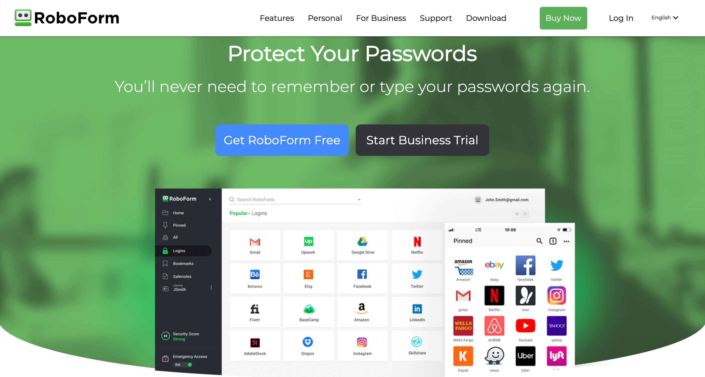
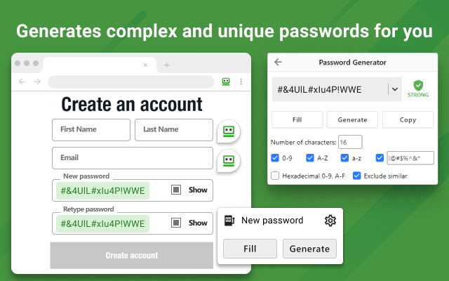
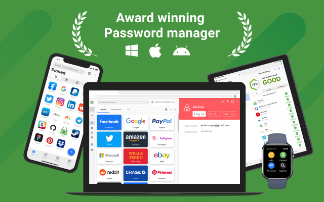

SHORT ON TIME? HERE’S A QUICK SUMMARY
Released by Siber Systems in 1999, RoboForm is perhaps one of the oldest password managers. It's more than two decades old, but it doesn't mean it's outdated! It has always been a reliable one-stop repository for all your essential data: usernames and passwords, personal and billing information, driver's license, passport details, and more. However, the old version lacked some core features such as emergency access, secure sharing, and unlimited passwords. In response to user feedback, the revamped RoboForm 8 was introduced in 2017, complete with upgraded security protocols and a more user-friendly interface to provide an enhanced password management experience.
Released by Siber Systems in 1999, RoboForm is perhaps one of the oldest password managers. It's more than two decades old, but it doesn't mean it's outdated! It has always been a reliable one-stop repository for all your essential data: usernames and passwords, personal and billing information, driver's license, passport details, and more. However, the old version lacked some core features such as emergency access, secure sharing, and unlimited passwords. In response to user feedback, the revamped RoboForm 8 was introduced in 2017, complete with upgraded security protocols and a more user-friendly interface to provide an enhanced password management experience.

👍 PROS:
- Create extremely long passwords of up to 512 characters!
- Store an unlimited number of passwords in its system
- Easy to share credentials securely
- Autofill web forms easily
- Ability to grant specific access levels to individual users
- Multi-platform support
- You can organize passwords into different categories, such as work and personal
- Seamless browser integration
- The mobile app works flawlessly and is easy to navigate
- Supports all major browsers and a few minor ones
- Conducts password audit via the Security Center
- Emergency access feature
- Ability to bookmark your favorite websites and web pages
- Automatically syncs across all your devices and browsers
- Cloud backup
- Ability to keep passwords local
- Supports Two Factor Authentication (2FA) / One Time Password (OTP)
- Reasonably priced
- 24/7 priority customer support
- Live chat assistance is available
👎 CONS:
- No month-to-month plan
- Some elements can be better explained
- Live chat is only available to paid users
- Overwhelming options in their desktop edition
Get RoboForm - Upgrade Your Password Management!
ROBOFORM KEY DATA:
GENERAL INFO:
Price: From $1.39/month ($16.68/year)
Money-back guarantee: 30 days
Desktop apps: Windows, macOS, Linux
Mobile apps: Android, iOS
Browser extensions: Chrome, Firefox, Microsoft Edge, Internet Explorer, Opera, Brave, MSN, Avant, and more
Number of devices you can sync: unlimited
CORE FEATURES:
Password storage: YES
Password generator: YES
Password recovery: NO
Autosave and autofill: YES
Import and Export passwords: YES
Allows secure sharing of passwords: YES
SECURITY FEATURES:
Multi-factor authentication: YES
Password strength checker: YES
Data breach scanner: YES
Independent audit: NO
EXTRAS:
Secure notes storage: YES
Credit card details storage: YES
Emergency access: YES
Trusted contacts: YES
Password inheritance: YES
SUPPORT:
Live Chat: YES
Email Support: YES
Phone Support: YES
Ticket Support: YES
SEE WHAT USERS HAVE TO SAY
Trustpilot Rating: 4.6 out of 5 from 306 reviews
“ I've been with RoboForm for years and I'm very happy with this program. I can take it anywhere, even use it on my phone. It's flexible so that when someone else is using your pc and you don't want them to see your passwords all you have to do is hide it, not sign in & they don't even know you have it. That's much better than using the browser for saving your passwords.”
“ Password Software you definitely need! I have used RoboForm for many years. I have over 200 logins to various websites and RoboForm has worked very, very good for me throughout my years of use, and I have not had a problem with it. I will always use this product for Username and Password management.”
“ I have used Roboform for a number of years. It is so easy to use and once a password is added to it that is job done. Without it, I would have a pad with all the web URLs and passwords written on it. Once the user has entered their master password it is simple to select the necessary log-in required. It is regularly updated which is a great boon because it stops you from having to check for them. I can't ever remember having to contact customer services but that in itself is a recommendation to the program.”
WHO IS BEHIND ROBOFORM?
RoboForm is a product developed and owned by Siber Systems, a software development company based in the United States. Siber Systems was founded in 1995 by brothers Dmitry and Igor Semyonov. They established the company with a focus on creating innovative software solutions to enhance productivity and security. RoboForm is one of their flagship products, offering password management and form-filling capabilities to millions of users worldwide. Over the years, Siber Systems has expanded its product offerings and gained a reputation for providing reliable and user-friendly software solutions.
WHO IS ROBOFORM FOR?
RoboForm is designed for a wide range of individuals and organizations who want to enhance their online security, simplify password management, and streamline form filling. Here are some groups of people who can benefit from using RoboForm:
WHAT ARE THE FEATURES?
Are you among those who reuse passwords? A Google study revealed that 52% of respondents admitted to using the same passwords for multiple accounts. Shockingly, 59% of individuals confessed to incorporating their name or birthday into their passwords. If you find yourself fitting into these statistics, we completely understand. Managing numerous password-protected accounts can be challenging, both for work and personal use. This is where a password manager like RoboForm proves invaluable. Let's explore some features that can empower you to enhance the security of your digital life:

Password Generator
When it comes to password strength, RoboForm takes a different approach compared to other password managers. While most generate passwords between 12 to 40 characters, RoboForm allows users to create ultra-long passwords of up to 512 characters. This means that the security of your passwords is significantly enhanced, as it would be virtually impossible for hackers to break passwords of this length.
Password Vault
RoboForm provides convenient access to its password vault through a variety of platforms, including desktop and mobile apps, web apps, and browser extensions. Within the vault, you can secure logins and passwords, website bookmarks, secure notes, identities, and contacts. Organizing your vault is a breeze, since you can keep entries in the main vault or categorize them into multiple folders and subfolders. Moreover, you can clone entries to effortlessly save the same login information across various folders and even shared folders.
Whenever you update an entry, RoboForm will ask if you want to update identical entries in your vault automatically. Adding new entries is also quick and easy. Simply click on the "plus" icon in the bottom-right corner of the main interface and choose the entry type you want. However, the simplest way to add new logins is through the browser extension, which automatically offers to save newly created or modified credentials every time you log in to an account.
One-click Login
With RoboForm, accessing password-protected websites is made easier through its One-click Logins feature. The first time you visit a password-protected website, RoboForm will prompt you to save your login credentials. Once your data is saved, you won't have to manually type in your username and password on your next visit. This feature saves time and ensures that you can quickly access your accounts securely without worrying about mistyping your login info.
Unlimited Password Storage
With RoboForm, you can say goodbye to the burden of remembering passwords. Whether you have numerous shopping websites, dating apps, work-related accounts, or streaming services to manage, RoboForm provides unlimited password storage across multiple devices. This means you can securely sign in to your accounts with just a single click, without any concerns about password limits or storage restrictions.
Automatic Form Filler
Manually filling out web forms for various activities such as travel reservations, payment processing, hotel bookings, and more can be a tiresome and time-consuming task. RoboForm understands this pain and offers a solution through its Automatic Form Filler feature. This feature utilizes a set of pre-defined templates where you can store your personal data, including your name, email, addresses, phone numbers, passport details, and more. By using these templates, you can easily fill out web forms in just a few seconds, without having to manually input the information each time. This feature saves you time and enhances your overall browsing experience by eliminating the need for repeatedly filling out information for each website you visit.
Two-Factor Authentication (2FA)
RoboForm enhances the security of your password vault by implementing two-factor authentication (2FA), which requires you to provide a secondary form of verification in addition to your master password before you can access your vault. RoboForm offers 2FA through various methods, including email, mobile phone, or using a 2FA app such as Google Authenticator, Microsoft Authenticator, or Authy. Each method generates a temporary one-time password that becomes invalid after 30–60 seconds, ensuring that only a user with physical access to your device can log into your account. This effectively prevents hackers from remotely accessing your password vault.
Apart from these methods, RoboForm Everywhere provides biometric 2FA logins for mobile devices, as well as Touch ID for Mac and fingerprint or face scanning for Windows computers with Windows Hello. With this feature, you can access your account using your face or fingerprint without requiring the master password. In combination with the 2FA methods mentioned earlier, this adds more layers of security to your account and password vault, giving you peace of mind knowing that your data is highly secure.
Password Sharing
Have you ever needed to share a WiFi or Netflix password with a family member or house guest, but worried about compromising your security? RoboForm offers a straightforward solution with its Password Sharing feature. You can easily share access to your password-protected accounts with someone else who is also a RoboForm user, and have the ability to revoke access at any time for extra security. This feature saves you from the hassle of manually sharing and managing passwords, while also ensuring your data stays secure. The only requirement is that the other person also needs to be a RoboForm user as well.
Automatic Sync
RoboForm simplifies the process of keeping your login details, passwords, and other credentials in sync across multiple devices and platforms with its Automatic Sync feature. This feature updates your information periodically to ensure that you can access them effortlessly regardless of your location or device. This syncing process applies to your desktop, tablet, mobile phone, and even the browsers you use. Therefore, you can easily access your login credentials anytime, anywhere, without having to manually update them on each device. This feature saves you time and effort, while also providing you the peace of mind knowing that your data is up to date and readily available.
Password Assessment
RoboForm's Password Assessment feature helps you maintain good password hygiene by calculating the strength of each of your passwords individually. This feature checks for factors that make passwords weak, including duplication and reuse, and provides recommendations for improvements where necessary. With this feature, you can easily avoid using weak, duplicated or recycled passwords, ensuring your data stays secure. By using strong and unique passwords, you take a proactive step towards protecting yourself from common attack methods, ultimately keeping your online accounts safe and secure.
ARE THERE ADDITIONAL FEATURES?
In addition to its core password management capabilities, RoboForm also includes a range of features to help improve the security of your online accounts. These extra features are in line with other leading password management utilities, which aim to provide users with added protection against common online threats.
Data Breach Scanner
With the release of version 8, RoboForm introduced a valuable update that helps users stay on top of their security: the Data Breach Scanner. This feature alerts you whenever any of your passwords have been exposed in a data breach, by checking your stored credentials against a database maintained by the reputable website 'Have I Been Pwned' (HIBP). Through this database, which monitors breaches and assists internet users and governments in tracking them, RoboForm ensures your data is always secure, notifying you when it detects any potential breaches to allow you to take proactive measures to protect your online accounts. This powerful feature demonstrates RoboForm's commitment to providing robust security features to its users, ensuring they have the tools they need to safeguard their digital identity.
Emergency Access
RoboForm's Emergency Access feature allows you to grant trusted contacts access to your RoboForm data in certain circumstances. While RoboForm does not offer Trusted Contacts or Password Inheritance features in the traditional sense, Emergency Access serves a similar purpose. This feature provides you with a way to share your password information with trusted people who can help you if you are unable to access your account due to health emergencies, untimely death, or even account recovery. By setting up Emergency Access, you can ensure that your sensitive information is securely shared only with trusted individuals you have authorized. This added feature is yet another way that RoboForm helps its users stay safe and secure in an ever-changing digital world.
To set up Emergency Access, simply enter your contact's email address and select a waiting period of up to 30 days . During this time, your emergency contact won't be able to open your password vault until the waiting period expires, giving you time to revoke access if necessary. With Emergency Access, you can be assured that your sensitive data is only shared with those you trust the most, providing peace of mind in case of unexpected circumstances.
This feature is similar to those offered by other password managers, but RoboForm stands out by making it easy to recover logins if you forget your master password. While other managers like Password Boss allow users to share specific items with their contacts, RoboForm provides entire vault access. Regardless, RoboForm's Emergency Access is a powerful feature that ensures you always have backup in critical times.
Bookmark Storage
RoboForm's Bookmarks feature allows you to save and access bookmarks across devices where RoboForm is installed. Similar to web browser bookmarks, you can add bookmarks directly from web pages using the RoboForm browser extension or from within the RoboForm web app and mobile apps.
One of the convenient aspects of RoboForm's bookmark sharing is its ability to quickly access your favorite sites across different devices and browsers. For example, if you use Safari on your iPhone and Chrome on your PC, RoboForm's bookmark sharing feature becomes a time-saving solution. It allows you to easily share research findings and important links between your phone and computer, whether you're on the go or working from home.
RoboForm's bookmark sharing enhances your productivity by enabling seamless access to your saved websites and links across multiple devices and browsers.
TOTP authenticator
RoboForm now offers a unique TOTP (time-based one-time password) 2-factor authentication feature that stands out among other password managers. With RoboForm, you can utilize your own RoboForm account for generating TOTP codes, eliminating the need for third-party apps like Google Authenticator. This not only saves time but also simplifies the authentication process. The feature is currently available on Windows and macOS for Chrome, Firefox, Edge, Opera, and Brave browsers, and will soon be available for mobile users as well.
IS IT SAFE AND RELIABLE?
RoboForm ensures your data is protected with state-of-the-art AES-256 bit encryption, fortified with PBKDF2 SHA-256. This means that even brute force attacks from hackers are virtually impossible to succeed. All data stored is locally encrypted and decrypted, meaning that even if RoboForm servers go down, you can still access your account without any issue. Moreover, RoboForm supports biometrics/touch ID and two-factor authentication to further reduce the risk of unauthorized access to your account.
To access your RoboForm account, you set up a master password, acting as the key to decrypt your stored passwords. Additionally, RoboForm supports two-factor authentication (2FA), adding an extra layer of security to your account. Your passwords and data are stored in an encrypted format on RoboForm's servers, ensuring their confidentiality even in the event of a server breach. The sharing feature is also secure, employing encryption and access controls to safeguard shared information. RoboForm's synchronization process across devices utilizes encryption to maintain the security of your data during transit.
Furthermore, RoboForm provides a password audit feature that evaluates the strength and security of your stored passwords. It identifies weak or duplicated passwords, helping you improve your overall security posture.
With this level of protection, you can rest assured that your personal information stays safe and secure.

WHAT PLATFORMS DOES ROBOFORM SUPPORT?
RoboForm is compatible with a wide range of platforms and devices, allowing you to access your passwords and data seamlessly across multiple devices. Here are the compatible platforms and devices supported by RoboForm:
Windows: RoboForm is compatible with Windows computers and laptops running Windows 10, Windows 8, Windows 7, and Windows Vista.
Mac: RoboForm supports macOS, making it compatible with Mac computers, including MacBook, iMac, Mac Pro, and Mac Mini.
iOS: RoboForm offers a dedicated app for iOS devices such as iPhones and iPads. You can download the RoboForm app from the App Store and manage your passwords and data on the go.
Android: RoboForm provides an Android app, allowing you to access your passwords and use RoboForm's features on Android smartphones and tablets. The app is available for download on the Google Play Store.
Web Browsers: RoboForm has browser extensions that are compatible with popular web browsers, including Google Chrome, Mozilla Firefox, Microsoft Edge, Safari, and Opera. These extensions enable seamless integration with your browser for auto-fill and password management.
Cross-Platform Synchronization: One of RoboForm's strengths is its ability to synchronize data across multiple devices and platforms. You can sync your passwords and data between Windows, Mac, iOS, and Android devices. Any changes or updates made on one device will be reflected on all synchronized devices.
IS IT EASY TO USE?
Setting up RoboForm is incredibly easy. It offers both a desktop app and a web app accessible through browser extensions. Installing the browser extensions or the desktop app should take no more than a couple of minutes. Upon installation, you’ll be prompted to create a RoboForm account and a master password. RoboForm allows importing of existing password vaults from major password managers such as Dashlane and 1Password, as well as from web browsers like Chrome, Firefox, Opera, and Microsoft Edge. While importing from browsers is done directly within RoboForm, importing from other password managers requires downloading a CSV file. However, detailed instructions are provided to guide you through the process, making the import quick and straightforward.
The interface of RoboForm, whether it's the web app or the desktop app, is incredibly simple and intuitive. The main features are listed in a column on the left side of the screen, making navigation easy. Although the desktop application may not have a modern appearance, it offers a range of options for storing and sharing passwords and setting up web form templates. The web app, on the other hand, has a more modern look while maintaining similar functionality.
The browser extension of RoboForm is very user-friendly and easy to navigate. Whenever you log into a new site, the extension will automatically prompt you to save the login details to your password vault. Once saved, you can easily access the Logins tab in the browser extension, pick the site you want to log in to, and RoboForm will do the rest - automatically signing you in and opening the site in a new tab so you can get started right away.
One thing you're sure to love about RoboForm is its exceptional auto-filling feature. Whenever you visit a saved site, the RoboForm icon appears automatically in your login fields. With just a single click on the icon, you can have your email and password info filled in for you - without any fuss or hassle. Overall, you'll find RoboForm to be very user-friendly, with an intuitive interface that makes it easy to get started right away.
ROBOFORM ON DESKTOP
RoboForm provides four ways to access your desktop account, each with consistent functionality: the standalone app, the menu bar, the browser extension, and the website. This is a significant improvement over the previous version, where the website only allowed read-only access. With RoboForm's various access methods, you can quickly and easily manage your passwords and other sensitive data across your devices and browsers. Whether you prefer using a standalone app, a browser extension, or a website, RoboForm has you covered.
Compared to the other three options, the standalone desktop app offers the least visually appealing user interface and user experience. Its layout is basic, featuring eight sections on the left column that reveal two additional columns on the right when clicked, except for the Security Center which has a slightly more modern tabbed interface. However, the app can be sparse and confusing at times, lacking detailed explanations for its limited features. Even though it's convenient to unlock the app using Touch ID on a Mac or the side button on an Apple Watch, its outdated interface means that other methods are preferable whenever possible.
In contrast to the standalone app, the website interface is well-designed, providing a modern and user-friendly experience. All important sections of the app are easily accessible, though some elements may be less visually appealing during deeper menu navigation. Despite this, the website functions as expected and provides a smooth user experience.
To generate new passwords in RoboForm, you must use either the menu bar or browser extension, as it is not possible to do so within the web or standalone app. However, the password generator is highly effective and offers numerous options to customize password characteristics. It is confusing why this feature has not been made available across all platforms, as it would greatly benefit users in generating secure passwords.
Like the password generator, the generation of one-time-use 2FA codes can only be done through the RoboForm browser extension . Unfortunately, this feature is not available across all platforms, limiting its usefulness for users who access RoboForm through other means.
Users can add personal information to the "Identities" section for auto-filling form fields. Although some fields like "AOL Name" and "Pager" may appear outdated, the form-filling functionality itself works well and is efficient.
The "Contacts" section of RoboForm seems to be out of place, and its limited features make it unlikely for users to find much use for it. Conversely, the "Safenotes" section offers encrypted text storage and works well, though expanding its capabilities to include secure storage for various file types could significantly enhance its utility and make it even more useful to users.
"Emergency Access" is a RoboForm feature that allows users to designate a trusted contact who can access their account if they become unable to do so. Users can specify a waiting period before the contact receives access, and retain the ability to deny access if they regain control of their account within that timeframe. While primarily intended for incapacitation or death scenarios, Emergency Access can also be helpful in cases of forgotten master passwords. Initially accessible only through the menu bar, Emergency Access has since been incorporated into the browser extensions and primary navigation bar, making it even more convenient for users.
The "Security Center" section offers users an overview of password security, auditing the strength of passwords and detecting instances of password reuse. Starting from May 2021, RoboForm has integrated the feature of importing lists of compromised passwords from Have I Been Pwned, an online tracker of exposed passwords and email addresses. For each compromised password, RoboForm provides a link to the corresponding website, enabling quick access to change the password and enhance account security.
To assess password strength, RoboForm uses the open-source tool Zxcvbn, which evaluates factors such as dictionary entries, common names, and common passwords. This is different from the standard approach of relying on lowercase letters, uppercase letters, digits, and symbols (LUDS) in password-strength evaluation. RoboForm asserts that Zxcvbn provides a more precise assessment of a password's difficulty to crack, making it more effective for users to improve their password security.
ROBOFORM ON-THE-GO
RoboForm's mobile apps have undergone a major overhaul since the last review, resulting in a streamlined and up-to-date look. The mobile apps now provide nearly all the functionalities found on the desktop interface, delivering a more complete experience for users on both iOS and Android platforms.
The RoboForm apps for iOS and Android are almost indistinguishable from one another, both offering four primary sections that can be accessed via the icons at the bottom of the screen: Start, ID, Browser, and Tools.
When you first launch the RoboForm app, you will be taken directly to the pinned section of the Start screen. In this section, you can pin any item from your vault by pressing and holding it, then selecting "pin." The other three sections found within the Start screen are Logins, Safenotes, and All. These sections present information in a grid view format with logos, when available. Alternatively, you can switch to a list view which shows logos on the left and corresponding text on the right. By tapping on a login entry, you can quickly log in to the associated website.
In the RoboForm app, the ID section encompasses all the information found in the Identities section on the desktop. This section utilizes wide rectangular grids with unique graphics for different data types. If you have multiple identities set up, you can easily switch between them by selecting the name at the top of the screen. Moreover, you can create a new identity directly from this section.
RoboForm's mobile browser performs its intended function satisfactorily. It features a Form Fill button at the bottom right corner, which shows a red dot when you have relevant saved information for the current webpage. Nonetheless, there's little need to use the integrated browser unless you're operating on an outdated version of iOS or Android that doesn't offer form filling capabilities across all browsers.
The Tools section in RoboForm comprises the Password Generator, Sharing Center, Security Center, and Emergency Access. The layout is neat and tidy, and the icons are attractive and visually pleasing.
IS THERE A FREE VERSION?
If you're looking for a free password manager, RoboForm Free is an excellent choice. It provides unlimited password storage on a single device, as well as password auditing, password generator, and form-filling capabilities. You can even share passwords securely with other RoboForm users. However, keep in mind that as a free user, you can only use it on one device. Unfortunately, this means that syncing passwords between multiple devices might be impossible. If you have only one device or don't require multi-device syncing, this should not be an issue. Alternatively, for just $1.39 per month, you can upgrade to RoboForm Everywhere and unlock all the premium features, including unlimited device syncing.
HOW MUCH IS IT?
While RoboForm offers a free account, it's essential to note that certain features like automatic syncing, 2FA, emergency access, and 24/7 priority support are only available with their paid version. As such, we highly recommend subscribing to gain access to these paid features. RoboForm Everywhere costs just $16.88 per year for a single license and $33.40 per year for a family account that can accommodate up to 5 accounts under one subscription. Further, by pre-paying for a three-year or five-year subscription, you can save up to 37% and 41%, respectively. Plus, all plans come with a 30-day satisfaction guarantee, so you can rest easy knowing that you are making an informed choice.
CUSTOMER SUPPORT
You'll be pleasantly surprised to know that RoboForm is among the few password managers that offer both live chat and phone support. Their live support team is available to assist you from Monday to Friday, between 9:00 am to 5:00 pm EST. Outside of those hours, you can still reach their support team via email or check their Help support page. On this page, you'll find a range of helpful topics that cover everything from importing and exporting data to emergency access, form fillings, and browser extensions. All in all, RoboForm is a reliable and helpful tool you can count on to streamline your online security.
FAQ
Is RoboForm easy to use for beginners?
Yes! RoboForm is considered to be easy to use for beginners due to its user-friendly interface and intuitive features. Installing RoboForm is a simple process on various platforms, including Windows, Mac, iOS, and Android, without requiring advanced technical knowledge. Once installed, users can navigate its clean and organized interface with ease. While beginners may need some time to explore the features, RoboForm generally provides a user-friendly password management solution.
Can RoboForm be used offline?
Yes, RoboForm can be used offline. It offers offline access to your stored passwords and other information, allowing you to access your data even when you don't have an internet connection. When you use RoboForm offline, you can still view and use your saved login credentials, form data, and secure notes without needing an active internet connection.
However, it's important to note that some features may be limited or unavailable when using RoboForm offline. For example, if you're offline, RoboForm won't be able to sync your data across devices or capture new passwords automatically. Any changes made to your data while offline will be synced once you have an internet connection again.
To ensure the best user experience and full functionality, it's recommended to regularly connect to the internet with RoboForm to sync your data and access the latest updates. This helps keep your passwords and information up to date across all your devices.
How does RoboForm handle data backups?
As a user of RoboForm, you have access to several data backup options to ensure the safety and accessibility of your information. You can export your data to a file stored locally on your computer or external storage devices, which includes your passwords, form data, and other information. This backup file enables you to restore your data if necessary. Additionally, RoboForm offers its own cloud storage service named RoboForm Everywhere, which securely syncs and stores your data across multiple devices. You can use this feature to access your information from anywhere with the confidence that your data is securely stored in the cloud.
Furthermore, you have the option to backup your data to third-party cloud storage services such as Dropbox or Google Drive, providing an additional layer of data redundancy and accessibility. It's vital to remember that RoboForm does not have access to your master passwords and cannot recover lost passwords. Therefore, it's essential to regularly create backups of your RoboForm data and take the necessary precautions to remember your master password or use provided password recovery options to access your data.
Can RoboForm store other types of sensitive information besides passwords?
Yes. You can securely store various types of sensitive information besides passwords. You can create secure notes to store text-based data such as credit card details, bank account information, software licenses, and more. Additionally, you can store identity information like your name, address, and email for convenient form filling. RoboForm offers a dedicated space for storing payment information, including credit card details and billing addresses, making online purchases more convenient and secure. You can create bookmarks within RoboForm for frequently visited websites, including sites that contain your personal information. Moreover, RoboForm provides custom fields that allow you to store specific types of information that may not be covered by default categories.